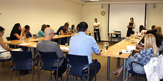

 אתגרי המנהיגות בבאר שבע – שיחה עם ראש העירייה רוביק דנילוביץ' 2016-07-13 תכנית בכירי עיריית באר שבע בתחומי חינוך, חברה ותרבות אירחה את ראש העיר, מר רוביק דנילוביץ', לשיחה על ניהול ומנהיגות קישור חיצוני: אתגרי המנהיגות בבאר שבע – שיחה עם ראש העירייה רוביק דנילוביץ'